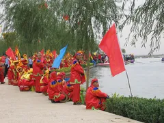

非遗图鉴 / 丝竹清音
02
非遗图鉴 · 传统音乐
丝竹清音
传统音乐 · 189 项、431 子项 · 第 3 / 4 页（Ⅱ-121 至 Ⅱ-180）
每一条只列名录上的事实：编号、名称、申报地区或单位、公布年份和批次。详情看中国非物质文化遗产网的官方页。在名录检索里查这一门类 →
- Ⅱ-121
- Ⅱ-122
- Ⅱ-123
锣鼓艺术
- 锣鼓艺术（汉沽飞镲）天津市汉沽区2008 第二批 · 新增项目官方页 →
- 锣鼓艺术（常山战鼓）河北省正定县2008 第二批 · 新增项目官方页 →
- 锣鼓艺术（太原锣鼓）山西省太原市2008 第二批 · 新增项目官方页 →
- 锣鼓艺术（泗泾十锦细锣鼓）上海市松江区2008 第二批 · 新增项目官方页 →
- 锣鼓艺术（大铜器）河南省西平县2008 第二批 · 新增项目官方页 →
- 锣鼓艺术（大铜器）河南省郏县2008 第二批 · 新增项目官方页 →
- 锣鼓艺术（开封盘鼓）河南省开封市2008 第二批 · 新增项目官方页 →
- 锣鼓艺术（宜昌堂调）湖北省宜昌市2008 第二批 · 新增项目官方页 →
- 锣鼓艺术（韩城行鼓）陕西省韩城市2008 第二批 · 新增项目官方页 →
- 锣鼓艺术（云胜锣鼓）山西省原平市2011 第三批 · 扩展项目官方页 →
- 锣鼓艺术（中州大鼓）河南省新乡县2011 第三批 · 扩展项目官方页 →
- 锣鼓艺术（鄂州牌子锣）湖北省鄂州市2011 第三批 · 扩展项目官方页 →
- 锣鼓艺术（小河锣鼓）重庆市渝北区2011 第三批 · 扩展项目官方页 →
- 锣鼓艺术（软槌锣鼓）山西省万荣县2014 第四批 · 扩展项目官方页 →
- 锣鼓艺术（花镲锣鼓）江西省丰城市2014 第四批 · 扩展项目官方页 →
- 锣鼓艺术（大铜器）河南省遂平县2014 第四批 · 扩展项目官方页 →
- 锣鼓艺术（老河口锣鼓架子）湖北省老河口市2014 第四批 · 扩展项目官方页 →
- 锣鼓艺术（八音锣鼓）广东省佛山市顺德区2014 第四批 · 扩展项目官方页 →
- 锣鼓艺术（临清驾鼓）山东省聊城市临清市2021 第五批 · 扩展项目官方页 →

河畔边休息的常山战鼓队图：Rita / CC BY-SA 4.0 / 维基共享资源。本站已缩放裁切，按 CC BY-SA 4.0 同样许可共享。 - Ⅱ-124
- Ⅱ-125
土家族咚咚喹
- 湖南省龙山县2008 第二批 · 新增项目官方页 →
- Ⅱ-126
哈萨克六十二阔恩尔
- 新疆维吾尔自治区伊犁哈萨克自治州2008 第二批 · 新增项目官方页 →
- Ⅱ-127
维吾尔族鼓吹乐
- 新疆维吾尔自治区2008 第二批 · 新增项目官方页 →
- Ⅱ-128
- Ⅱ-129
- Ⅱ-130
- Ⅱ-131
- Ⅱ-132
哈萨克族冬布拉艺术
- 新疆维吾尔自治区伊犁哈萨克自治州2008 第二批 · 新增项目官方页 →
- Ⅱ-133
- Ⅱ-134
蒙古族绰尔
- 新疆维吾尔自治区阿勒泰地区2008 第二批 · 新增项目官方页 →
- Ⅱ-135
- Ⅱ-136
- Ⅱ-137
吟诵调
- 吟诵调（常州吟诵）江苏省常州市2008 第二批 · 新增项目官方页 →
- Ⅱ-138
佛教音乐
- 佛教音乐（天宁寺梵呗唱诵）江苏省常州市2008 第二批 · 新增项目官方页 →
- 佛教音乐（鱼山梵呗）山东省东阿县2008 第二批 · 新增项目官方页 →
- 佛教音乐（大相国寺梵乐）河南省开封市2008 第二批 · 新增项目官方页 →
- 佛教音乐（直孔噶举派音乐）西藏自治区墨竹工卡县2008 第二批 · 新增项目官方页 →
- 佛教音乐（拉卜楞寺佛殿音乐道得尔）甘肃省夏河县2008 第二批 · 新增项目官方页 →
- 佛教音乐（青海藏族唱经调）青海省兴海县2008 第二批 · 新增项目官方页 →
- 佛教音乐（北武当庙寺庙音乐）宁夏回族自治区平罗县2008 第二批 · 新增项目官方页 →
- 佛教音乐（楞严寺寺庙音乐）山西省左云县2011 第三批 · 扩展项目官方页 →
- 佛教音乐（塔尔寺花架音乐）青海省湟中县2011 第三批 · 扩展项目官方页 →
- 佛教音乐（觉囊梵音）四川省壤塘县2011 第三批 · 扩展项目官方页 →
- 佛教音乐（洋县佛教音乐）陕西省洋县2011 第三批 · 扩展项目官方页 →
- 佛教音乐（金山寺水陆法会仪式音乐）江苏省镇江市2014 第四批 · 扩展项目官方页 →
- 佛教音乐（雄色寺绝鲁）西藏自治区曲水县2014 第四批 · 扩展项目官方页 →
- Ⅱ-139
道教音乐
- 道教音乐（广宗太平道乐）河北省广宗县2008 第二批 · 新增项目官方页 →
- 道教音乐（恒山道乐）山西省阳高县2008 第二批 · 新增项目官方页 →
- 道教音乐（上海道教音乐）上海市道教协会2008 第二批 · 新增项目官方页 →
- 道教音乐（无锡道教音乐）江苏省无锡市2008 第二批 · 新增项目官方页 →
- 道教音乐（齐云山道场音乐）安徽省休宁县2008 第二批 · 新增项目官方页 →
- 道教音乐（崂山道教音乐）山东省青岛市崂山区2008 第二批 · 新增项目官方页 →
- 道教音乐（泰山道教音乐）山东省泰安市2008 第二批 · 新增项目官方页 →
- 道教音乐（胶东全真道教音乐）山东省烟台市2008 第二批 · 新增项目官方页 →
- 道教音乐（腊山道教音乐）山东省东平县2008 第二批 · 新增项目官方页 →
- 道教音乐（海南斋醮科仪音乐）海南省定安县2008 第二批 · 新增项目官方页 →
- 道教音乐（成都道教音乐）四川省成都市2008 第二批 · 新增项目官方页 →
- 道教音乐（白云山道教音乐）陕西省佳县2008 第二批 · 新增项目官方页 →
- 道教音乐（清水道教音乐）甘肃省清水县2008 第二批 · 新增项目官方页 →
- 道教音乐（东岳观道教音乐）浙江省平阳县2011 第三批 · 扩展项目官方页 →
- 道教音乐（澳门道教科仪音乐）澳门特别行政区2011 第三批 · 扩展项目官方页 →
- 道教音乐（花张蒙道教音乐）河北省定州市2014 第四批 · 扩展项目官方页 →
- 道教音乐（茅山道教音乐）江苏省句容市2014 第四批 · 扩展项目官方页 →
- 道教音乐（苍南正一派科仪音乐）浙江省苍南县2014 第四批 · 扩展项目官方页 →
- 道教音乐（龙虎山正一天师道道教音乐）江西省鹰潭市2014 第四批 · 扩展项目官方页 →
- 道教音乐（全真道堂科仪音乐）香港特别行政区2014 第四批 · 扩展项目官方页 →
- Ⅱ-140
凤阳民歌
- 安徽省滁州市2011 第三批 · 新增项目官方页 →
- Ⅱ-141
九江山歌
- 江西省九江县2011 第三批 · 新增项目官方页 →
- Ⅱ-142
利川灯歌
- 湖北省利川市2011 第三批 · 新增项目官方页 →
- Ⅱ-143
天门民歌
- 湖北省天门市2011 第三批 · 新增项目官方页 →
- Ⅱ-144
临高渔歌
- 海南省临高县2011 第三批 · 新增项目官方页 →
- Ⅱ-145
弥渡民歌
- 云南省弥渡县2011 第三批 · 新增项目官方页 →
- Ⅱ-146
青海汉族民间小调
- 青海省西宁市2011 第三批 · 新增项目官方页 →
- Ⅱ-147
阿里郎
- 吉林省延边朝鲜族自治州2011 第三批 · 新增项目官方页 →
- Ⅱ-148
哈萨克族民歌
- 新疆维吾尔自治区伊犁哈萨克自治州2011 第三批 · 新增项目官方页 →
- Ⅱ-149
塔吉克族民歌
- 新疆维吾尔自治区塔什库尔干塔吉克自治县2011 第三批 · 新增项目官方页 →
- Ⅱ-150
茅山号子
- 江苏省兴化市2011 第三批 · 新增项目官方页 →
- Ⅱ-151
弦索乐
- 弦索乐（菏泽弦索乐）山东省菏泽市2011 第三批 · 新增项目官方页 →
- Ⅱ-152
纳西族白沙细乐
- 云南省丽江市古城区2011 第三批 · 新增项目官方页 →
- Ⅱ-153
伽倻琴艺术
- 吉林省延吉市2011 第三批 · 新增项目官方页 →
- Ⅱ-154
京族独弦琴艺术
- 广西壮族自治区东兴市2011 第三批 · 新增项目官方页 →
- Ⅱ-155
哈萨克族库布孜
- 新疆维吾尔自治区伊犁哈萨克自治州2011 第三批 · 新增项目官方页 →
- Ⅱ-156
- Ⅱ-157
- Ⅱ-158
西岭山歌
- 四川省大邑县2014 第四批 · 新增项目官方页 →
- Ⅱ-159
旬阳民歌
- 陕西省旬阳县2014 第四批 · 新增项目官方页 →
- Ⅱ-160
撒拉族民歌
- 青海省循化撒拉族自治县2014 第四批 · 新增项目官方页 →
- Ⅱ-161
锡伯族民歌
- 新疆维吾尔自治区察布查尔锡伯自治县2014 第四批 · 新增项目官方页 →
- Ⅱ-162
凌云壮族七十二巫调音乐
- 广西壮族自治区凌云县2014 第四批 · 新增项目官方页 →
- Ⅱ-163
毕摩音乐
- 四川省美姑县2014 第四批 · 新增项目官方页 →
- Ⅱ-164
剑川白曲
- 云南省大理白族自治州2014 第四批 · 新增项目官方页 →
- Ⅱ-165
阿斯尔
- 内蒙古自治区镶黄旗2014 第四批 · 新增项目官方页 →
- Ⅱ-166
莆仙十音八乐
- 福建省莆田市涵江区2014 第四批 · 新增项目官方页 →
- Ⅱ-167
蒙古族汗廷音乐
- 内蒙古自治区阿鲁科尔沁旗2014 第四批 · 新增项目官方页 →
- Ⅱ-168
浏阳文庙祭孔音乐
- 湖南省浏阳市2014 第四批 · 新增项目官方页 →
- Ⅱ-169
潮尔
- 潮尔（蒙古族弓弦乐）内蒙古自治区通辽市2014 第四批 · 新增项目官方页 →
- Ⅱ-170
蒙古族托布秀尔音乐
- 新疆维吾尔自治区博尔塔拉蒙古自治州2014 第四批 · 新增项目官方页 →
- Ⅱ-171
赫哲族嫁令阔
- 黑龙江省双鸭山市饶河县2021 第五批 · 新增项目官方页 →
- Ⅱ-172
崇明山歌
- 上海市崇明区2021 第五批 · 新增项目官方页 →
- Ⅱ-173
南闸民歌
- 江苏省淮安市淮安区2021 第五批 · 新增项目官方页 →
- Ⅱ-174
嘉禾伴嫁歌
- 湖南省郴州市嘉禾县2021 第五批 · 新增项目官方页 →
- Ⅱ-175
疍歌
- 海南省三亚市2021 第五批 · 新增项目官方页 →
- Ⅱ-176
仡佬族民歌
- 贵州省铜仁市石阡县2021 第五批 · 新增项目官方页 →
- Ⅱ-177
独龙族民歌
- 云南省怒江傈僳族自治州贡山独龙族怒族自治县2021 第五批 · 新增项目官方页 →
- Ⅱ-178
门巴族萨玛民歌
- 西藏自治区山南市2021 第五批 · 新增项目官方页 →
- Ⅱ-179
甘州小调
- 甘肃省张掖市甘州区2021 第五批 · 新增项目官方页 →
- Ⅱ-180
阿柔逗曲
- 青海省海北藏族自治州祁连县2021 第五批 · 新增项目官方页 →